1. Explanation
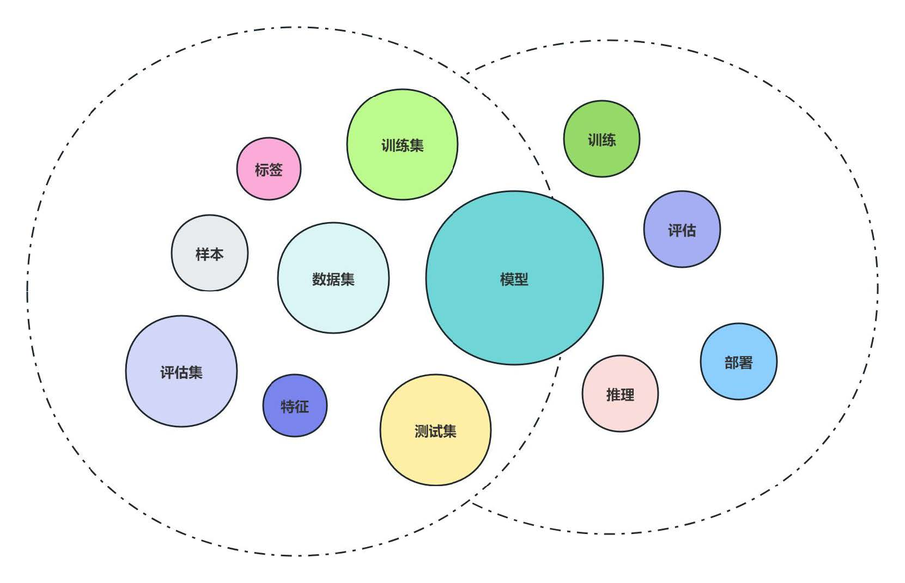
| Entry | Memo |
|---|---|
样本 |
一条数据 |
特征 |
被观测对象的可测量特性，如西瓜的颜色、纹路等 |
特征向量 |
用一个d维向量表征一个样本的所有或部分特征 |
标签(label)/真实值 |
样本特征对应的真实类型或真实取值，即正确答案 |
数据集 Dataset |
多条样本组成的集合 |
训练集 Training |
用于训练模型的数据集合 |
评估集 Validation/Evaluation |
用于在训练过程中周期性评估模型效果的数据集合 |
测试集 Test |
用于在训练完成后评估最终模型效果的数据集合 |
模型 |
可从数据中学习到的，可实现特定功能/映射的函数 |
误差/损失 |
样本真实值与预测值间的误差 |
预测值 |
样本输入模型后输出的结果 |
模型训练 |
使用训练数据集对模型参数迭代更新 |
模型收敛 |
任意输入样本对应的预测结果与真实标签间的误差趋于稳定 |
模型评估 |
使用测试数据和评估指标对训练完成的模型的效果进行评估 |
模型推理/预测 |
使用训练好的模型对数据进行预测 |
模型部署 |
使用服务加载训练好的模型，对外提供推理服务 |
6. Learning Rate
-
学习率：决定模型参数的更新幅度，学习率越高，模型参数更新越激进，
即相同Loss对模型参数产生的调整幅度越大，反之越越小；
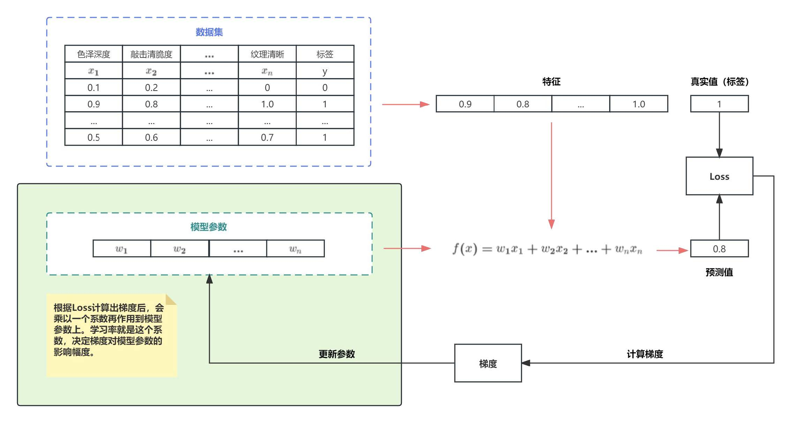
-
若学习率太小，会导致网络loss下降非常慢；若学习率太大，那参数更新的幅度就非常大，
产生振荡，导致网络收敛到局部最优点，或loss 不降反增；
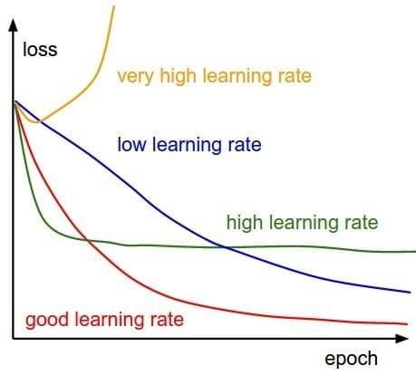
7. Batch Size
-
一次向模型输入的数据数量，Batch Size越大，模型一次处理的数据量越大，
能更快的运行完一个Epoch，反之运行完一个Epoch越慢； -
因模型一次是根据一个Batch Size的数据计算Loss，再更新模型参数，若Batch Size过小，
单个Batch可能与整个数据的分布有较大差异，会带来较大的噪声，导致模型难收敛； -
另Batch Size越大，模型单个Step加载的数据量越大，
对GPU显存的占用也越大，当GPU显存不充足，较大的Batch Size会导致OOM，
故需针对实际的硬件情况，设置合理的Batch Size取值；
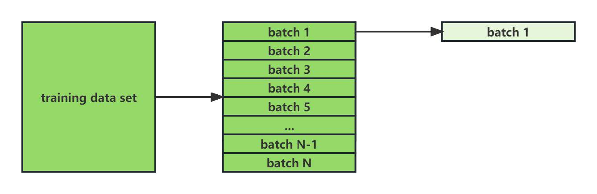
|
8. Activation Function
8.1. AF Intro
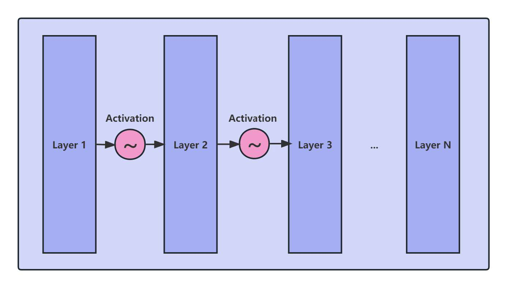
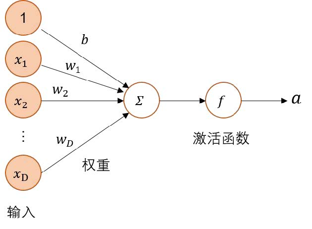
-
线性函数：一次函数的别称；
-
非线性函数：函数图像不是一条直线的函数；
-
非线性函数包括：指数函数、幂函数、对数函数、
多项式函数等等基本初等函数及他们组成的复合函数； -
激活函数：多层神经网络的基础，保证多层网络不退化成线性网络；
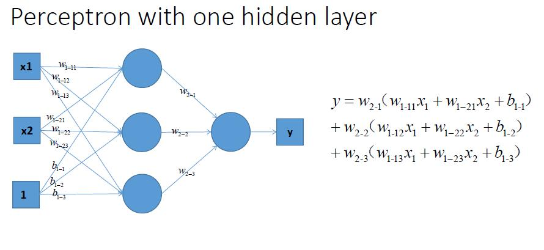
-
神经网络：⇢ 输入 * 权重 ⇢ 输出
-
线性模型的表达能力不够，激活函数使神经网络可逼近其他的任何非线性函数，
可使神经网络应用到更多非线性模型中；
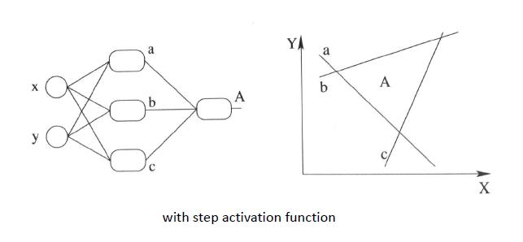
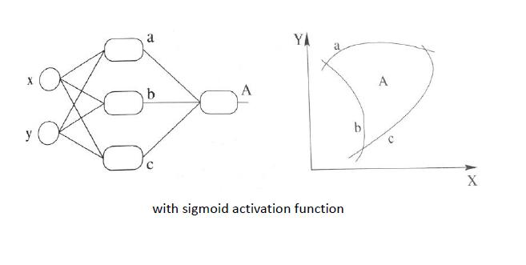
8.2. AF sigmoid
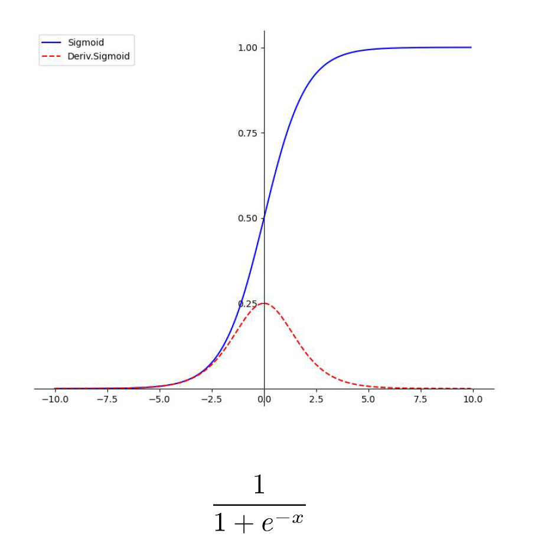
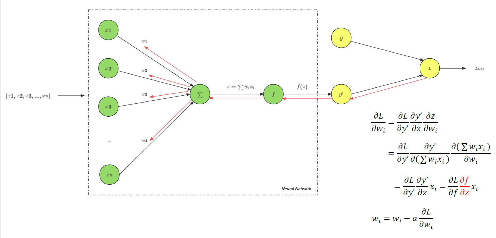
|
-
希望激活函数输出均值为0：
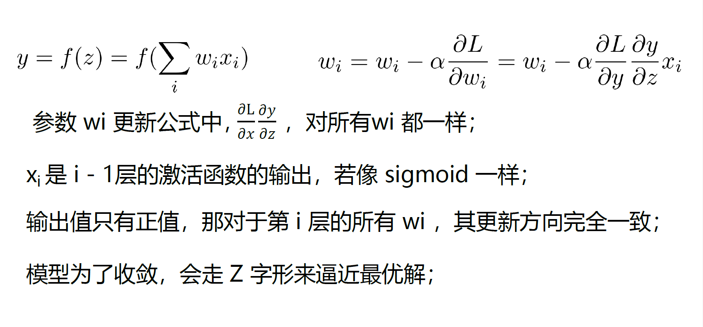
9. Loss Function
9.1. LF Intro
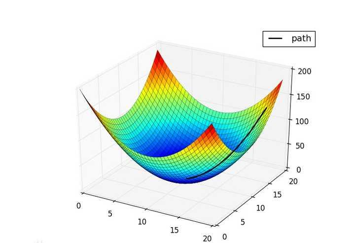
-
损失函数：度量模型的预测值f(x)与真实值Y的差异程度 (损失值)的运算函数，它是 非负实值函数；
-
损失函数仅用于模型训练阶段，得到损失值后，通过反向传播来更新参数，
从而降低预测值与真实值间的损失值，从而提升模型性能； -
整个模型训练的过程，即在通过不断更新参数，使损失函数不断逼近全局最优点(全局最小值)；
-
不同类型的任务会定义不同的损失函数，如回归任务中的MAE、MSE，分类任务中的交叉熵损失等；
9.2. MSE
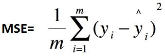
-
均方误差：Mean Squared Error，MSE，也称平方损失或L2 Loss；
常用在最小二乘法中，思想：使各训练点到最优拟合线的距离最小(平方和最小)；
9.4. Cross Entropy Loss
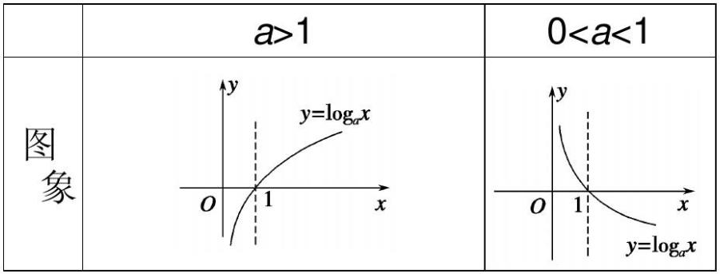
-
交叉熵损失：log函数是很多损失函数中的重要组成部分，对log函数，
默认的底数a是e，即损失函数中使用的log函数默认a > 1； -
二分类：其中，Yi为样本i的真实标签，正类为1，负类为0；p表示样本i预测为正类的概率；
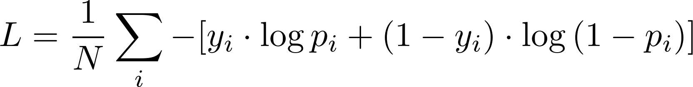
-
多分类：其中，M为类别数量；y符号函数，
样本i真实类别等于c则为1，否则为0；预测样本i属于类别c的预测概率；
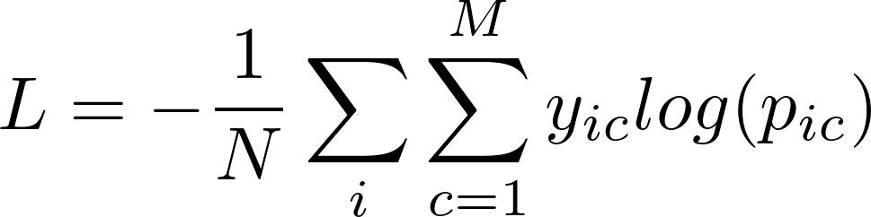
loss = -(1 * log(0.8) + 0 * log(0.2)) = -log(0.8) = 0.0969
loss = -(1 * log(0.5) + 0 * log(0.5)) = -log(0.5) = 0.3010
|
SL1-1 = - (0 * log0.3 + 0 * log0.3 + 1 * log0.4) = 0.91 |
-
04 - 0.33.36